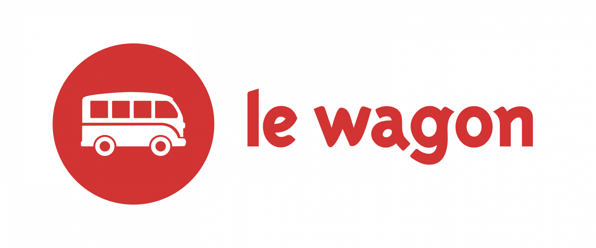

Marie-Charlotte Eyb
My Curriculum Vitae
After my studies in Business Administration and Economics, I decided to join the coding bootcamp and learn all about CSS, HTML, Javascript, Ruby etc. in a nice and international environment. Joining Le Wagon was one of the best decisions I made.
Click on the link to see Le Wagons programWorking Experience
|  |
September 2017 - Today, Lisbon9 Weeks Full Stack Coding Bootcamp |
May 2017 - July 2017, MunichTransaction Services, Deal Advisory |
|
September 2014 - Ocotber 2014, MunichStudent assistant in the field of social research |
|
March 2014 - March 2014, BerlinWork experience in the office of the Vice President of the Lower House of German Parliament |
|
September 2013 - September 2014, MunichWork experience in the accounting division |
Education

|
2013 - 2017Bachelor of Science, Business Administration & Economics |

|
2015 - 2015Semester Abroad, Business Administration |
Volunteer Experience

|
November 2008 - November 2008Social Services, Voluntary Work |
2013 - 2014Social Services, Member of the Voluntary Student Group at the University of Passau |